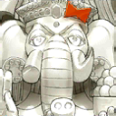

- 11/13
- 遊戲更新公告(11/13 20:00實施)
非常感謝您的使用。
這裡是「Fate/Grand Order」營運團隊。
已在下列時間，進行了遊戲更新。
另外，本次的遊戲更新不包含程式的更新。
更新之後猜測可能會有因連線集中，導致感到遊戲的動作延遲的情況。
屆時還請多加嘗試。
◆有關從者真名的注意◆
在2018年12月31日(二) 23:00以後新配信的主線故事及期間限定活動、一部份關卡、宣傳活動及召喚中，會顯示隱藏真名的對象從者真名。
※已經配信的主線故事、復刻活動、一部份關卡中不在此限。
※本公告中，會記載隱藏真名的對象從者真名。
對應時間
2019年11月13日(三) 20:00
對應內容
▼遊戲的更新
1.「1800萬DL突破宣傳活動」的開始
2.聖晶石召喚(期間限定)「1800萬DL記念Pick Up召喚」的開始
3.『TV動畫「Fate/Grand Order -絕對魔獸戰線巴比倫尼亞-」放送記念宣傳活動 第2彈』的開始
4.達文西工房的「魔力稜鏡交換」に期間限定道具追加
▼問題的修正
1.關於一部份可靠從者的絆達成等級10所獲得得的概念禮裝，副作用效果會有未發生情況的問題修正
※對象從者如下。
・


・


 2.一部份從者的職階技能副作用效果會有未發生情況的問題修正
2.一部份從者的職階技能副作用效果會有未發生情況的問題修正
※對象從者如下。
・


 3.由於遊戲引擎更新造成的圖像及聲音問題修正
3.由於遊戲引擎更新造成的圖像及聲音問題修正
※對象從者如下。
・

 4.一部份從者的技能說明文字有誤記載的問題修正
4.一部份從者的技能說明文字有誤記載的問題修正
※只有記載的問題，對實際效果沒有影響。
※對象從者及技能如下。
・ 幻術 A
幻術 A
(誤)對我方全體賦予無敵狀態(1回合)＆星星發生率提升[Lv.](1回合)＋ 敵全體的Critical發生率下降(3回合)
(正)對我方全體賦予無敵狀態(1回合)＆星星發生率提升[Lv.](1回合)＋ 敵全體的Critical發生率下降[Lv.](3回合)
・ 鞍馬の申し子 A+
鞍馬の申し子 A+
(誤)自身的星星集中度提升[Lv.](1回合)＆賦予弱體無效狀態(1回合)＆賦予在自身的普通攻擊時以低機率解除敵人強化狀態的狀態[Lv.](1回合)
(正)自身的星星集中度提升[Lv.](1回合)＆賦予弱體無效狀態(1回合)＆賦予在自身的普通攻擊時以低機率解除敵人強化狀態的狀態(1回合)
5.特定從者的寶具中，在寶具等級未影響的效果記載[Lv.]的問題修正
※只有文字的變更，效果自身沒有變更。
※對象從者如下。
・
(修正前)對敵全體的強力攻擊[Lv.]＆攻擊力下降[Lv.](3回合)<OverCharge的話效果提升>＋對自身賦予精神異常無效狀態[Lv.](3回合)
(修正後)對敵全體的強力攻擊[Lv.]＆攻擊力下降(3回合)<OverCharge的話效果提升>＋對自身賦予精神異常無效狀態(3回合)
・ (寶具強化後)
(寶具強化後)
(修正前)對敵全體的強力攻擊[Lv.]▲＆攻擊力下降[Lv.](3回合)<OverCharge的話效果提升>＋對自身賦予精神異常無效狀態[Lv.](3回合)
(修正後)對敵全體的強力攻擊[Lv.]▲＆攻擊力下降(3回合)<OverCharge的話效果提升>＋對自身賦予精神異常無效狀態(3回合)
・
(修正前)對自身賦予必中狀態(1回合)＋對敵單體的超強力攻擊[Lv.]＆Critical發生率下降[Lv.](3回合)<OverCharge的話效果提升>
(修正後)對自身賦予必中狀態(1回合)＋對敵單體的超強力攻擊[Lv.]＆Critical發生率下降(3回合)<OverCharge的話效果提升>
・ (寶具強化後)
(寶具強化後)
(修正前)對自身賦予必中狀態(1回合)＋對敵單體的超強力攻擊[Lv.]▲＆Critical發生率下降[Lv.](3回合)<OverCharge的話效果提升>
(修正後)對自身賦予必中狀態(1回合)＋對敵單體的超強力攻擊[Lv.]▲＆Critical發生率下降(3回合)<OverCharge的話效果提升>
・
(修正前)對敵全體以機率賦予暈眩狀態(1回合)＆賦予詛咒狀態[Lv.](3回合)<OverCharge的話效果UP>
(修正後)對敵全體以機率賦予暈眩狀態[Lv.](1回合)＆賦予詛咒狀態(3回合)<OverCharge的話效果UP>
・ (寶具強化後)
(寶具強化後)
(修正前)對敵全體的強力防禦力無視攻擊[Lv.]▲＆以高機率賦予詛咒狀態[Lv.](3回合)▲<OverCharge的話效果UP>
(修正後)對敵全體的強力防禦力無視攻擊[Lv.]▲＆賦予詛咒狀態(3回合)▲<OverCharge的話效果UP>
6.特定從者的寶具中，在寶具等級影響的效果未記載[Lv.]記載的問題修正
※只有文字的變更，效果自身沒有變更。
・
(修正前)對敵全體以機率賦予暈眩狀態(1回合)＆賦予詛咒狀態[Lv.](3回合)<OverCharge的話效果UP>
(修正後)對敵全體以機率賦予暈眩狀態[Lv.](1回合)＆賦予詛咒狀態(3回合)<OverCharge的話效果UP>
7.一部份從者的寶具效果說明文字記載有誤的問題修正
※只有文字的變更，效果本身沒有變更。
※對象從者如下。
・ 8.關於特定的從者，一部份的寶具效果的說明文字與實際發動順序有差異的問題修正
8.關於特定的從者，一部份的寶具效果的說明文字與實際發動順序有差異的問題修正
※只有發動順序的變更，寶具效果沒有變更。
※對象從者如下。
・
 9.一部份文字的錯字漏字修正
9.一部份文字的錯字漏字修正
▼遊戲的修改
1.配合NPC裝備概念禮裝，調整特定關卡中一部份敵人的HP
※對象關卡如下。
・第2部序幕 序
・亞種特異點Ⅲ 主線關卡
2.從者強化畫面中，在「強化」鍵上方修改成會顯示宣傳活動名
3.各種UI及圖像的調整
今後也請多多指教「Fate/Grand Order」。